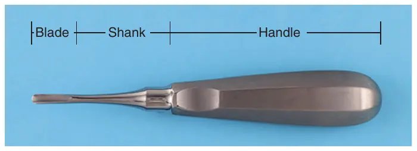
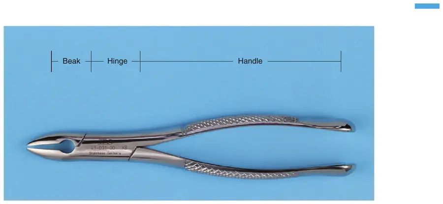

نسخه استخراجشده؛ ترجمه یا تأیید علمی انجام نشده است. وضعیت: captured
الواتور دندانی دندان را از استخوان اطراف لق (luxate) میکند. شل کردن دندان پیش از گذاشتن فورسپس، کل کشیدن را سادهتر میکند و شکستن تاج، ریشه و استخوان را کم میکند. و اگر ریشه شکست، چون قبلاً با الواتور شل شده، بیرون آوردنش راحتتر است.

چهار کار الواتور: لق کردن دندان، گشاد کردن استخوان آلوئول (با گسترش پلیت باکوسرویکال، مسیر خروج محدود باز میشود)، بیرون آوردن ریشهی شکسته، بیرون آوردن ریشهی سکشنشده.
سه جزء: دسته (معمولاً درشت، برای نیروی زیاد ولی کنترلشده)، شنک (رابط، بهقدر کافی قوی برای انتقال نیرو)، تیغه (نوک کاری که نیرو را به دندان یا استخوان منتقل میکند).
دستهی کراسبار یا T باید با احتیاط زیاد استفاده شود — نیروی بیش از حد تولید میکند و میتواند هم دندان و هم استخوان را بشکند.
سه نوع پایه — تفاوت اصلی در شکل و اندازهی تیغه است:
پریوتوم لیگامان پریودنتال را میبرد تا دندان راحتتر دربیاید — بهویژه وقتی میخواهی استخوان را برای ایمپلنت حفظ کنی. نوک را داخل فضای PDL میگذاری و در جهت آپیکالی در راستای محور طولی دندان ۲ تا ۳ میلیمتر پیش میبری، بیرون میآوری و در نقطهی مجاور دوباره وارد میکنی؛ دور دندان میچرخی و تدریجاً عمیقتر میروی. بعد با الواتور یا فورسپس دندان را درمیآوری — با پرهیز از گشاد کردن یا شکستن استخوان.
فورسپس در حالت ایدهآل دندانِ از پیش لقشده را از ساکت بلند میکند، نه اینکه بکشد. سه جزء: دسته (مضرس برای گریپ مطمئن)، لولا (نیرو را از دسته به فک منتقل و متمرکز میکند)، فک یا بیک (بیشترین تنوع اینجاست).

قاعدهی مادر: فک فورسپس برای ریشه طراحی شده، نه برای تاج — و نزدیک محل اتصال تاج و ریشه مینشیند. هرچه انطباق فک با ریشه بهتر باشد، کشیدن کارآمدتر و شکستن ریشه کمتر است.
طرز نگه داشتن و زاویهی فک: فورسپس ماگزیلا با کف دست از کنار یا زیر گرفته میشود تا بیک رو به بالا باشد، و فکش موازی دسته است. فورسپس مندیبل با کف دست روی آن و بیک رو به پایین، و فکش عمود بر دسته. فورسپس مولر ماگزیلا آفست یا بایونت است تا در عقب دهان دست راحت بماند و بیک موازی محور دندان بنشیند. سبک انگلیسی لولا و دستهی عمودی دارد و در جهت عمودی گرفته میشود.
ماگزیلا — ۱۵۰ یونیورسال بالا (از کنار S شکل، از بالا مستقیم؛ فکها فقط در نوک به هم میرسند؛ انحنایش هم انسیزور و هم پرمولر را میپوشاند)، 150A اصلاحشده برای پرمولر بالا و نامناسب برای انسیزور، ۱ مستقیم، برای انسیزور و کانین بالا راحتتر از ۱۵۰، 53R و 53L مولر بالا (سطح مقعر صاف برای ریشهی پالاتال بهعلاوهی بیک نوکدار برای دوشاخگی باکال؛
چون دوشاخگی باکال است، جفت چپ و راست لازم است)، 88R و 88L با بیک بلندتر و تیزتر، برای مولر بالای شدیداً پوسیده، 210S برای مولر دوم و عقل با ریشهی مخروطی منفرد، ۶۵ فورسپس نوکریشه، 150S نسخهی کوچک ۱۵۰ بهعنوان یونیورسال دندان شیری بالا.
عیب ۸۸: استخوان آلوئول کرستال را له میکند، و اگر روی دندان سالم و بدون الواسیون درست به کار رود، میتواند بخش بزرگی از پلیت باکال را بشکند.
مندیبل — ۱۵۱ یونیورسال پایین (دسته شبیه ۱۵۰ ولی بیک رو به پایین؛ فکهای صاف و باریک که فقط در نوک به هم میرسند)، 151A فقط برای پرمولر پایین، ۱۷ مولر پایین، دستهی مستقیم و بیک مایل رو به پایین با نوک تیز وسط که در دوشاخگی مینشیند — برای مولر با ریشهی جوشخوردهی مخروطی به کار نمیرود؛
آنجا ۱۵۱، ۸۷ (کاوهورن) دو بیک سنگین و نوکدار که وارد دوشاخگی میشوند و با فشردن دستهها و تکیه بر پلیت باکال و لینگوال، دندان از ساکت بیرون فشرده میشود، 151S برای دندان شیری پایین.
چرا مولر پایین جفت چپ و راست ندارد ولی مولر بالا دارد: دوشاخگی مولر پایین باکال و لینگوال است، پس یک فورسپس هر دو سمت را میگیرد. کاوهورن و سبک انگلیسی هر دو نیروی زیادی تولید میکنند — جراح مبتدی با احتیاط، وگرنه شکستن استخوان آلوئول یا آسیب به دندانهای مقابل.
تری استاندارد کشیدن ساده: سرنگ و سوزن و کارپول بیحسی، الواتور پریوستئال شمارهی ۹، کورت پریاپیکال، الواتور مستقیم کوچک و بزرگ، پنس کالج، هموستات خمیده، تاول کلیپ، رترکتور Austin یا Minnesota، نوک ساکشن، گاز.
فورسپس بعد از باز کردن تری اضافه میشود. تری کشیدن جراحی برابر است با همهی اینها بهعلاوهی نیدل هولدر و نخ، قیچی بخیه، دسته و تیغه، پنس Adson، سوهان استخوان، رترکتور زبان، الواتور Cryer، رانژور، و هندپیس و بور.